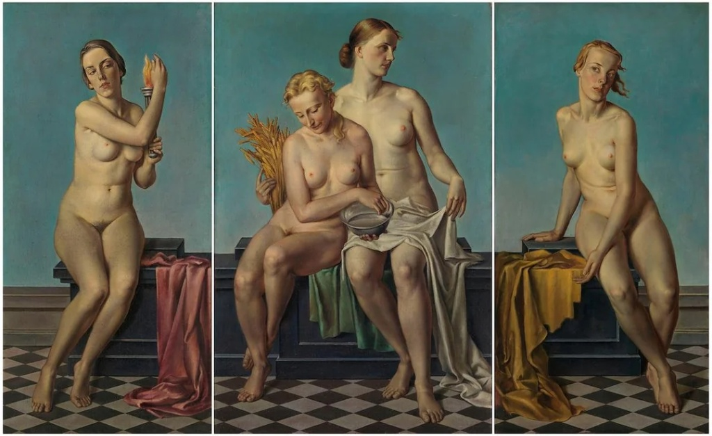
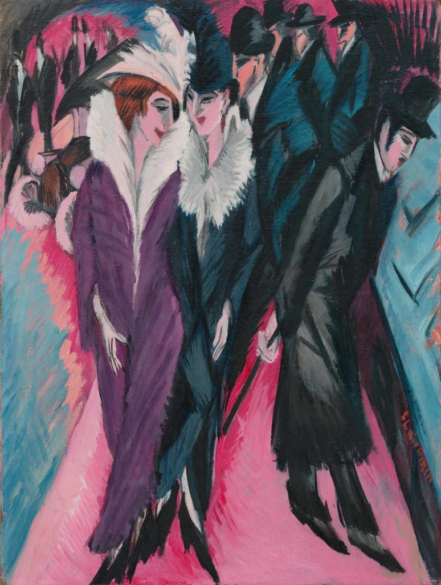
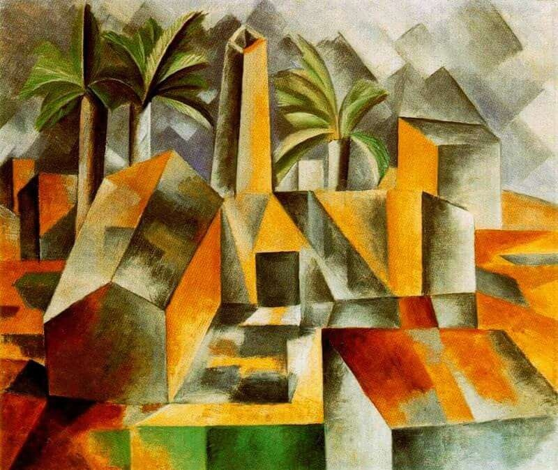
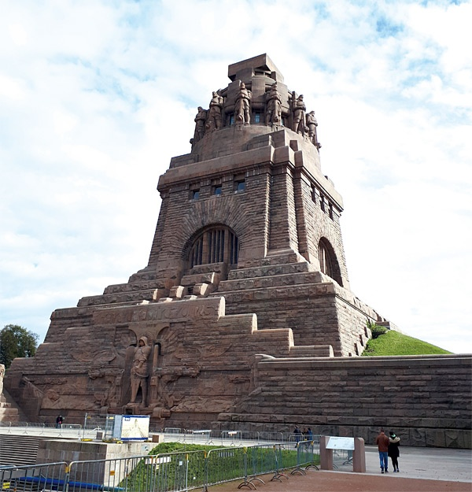
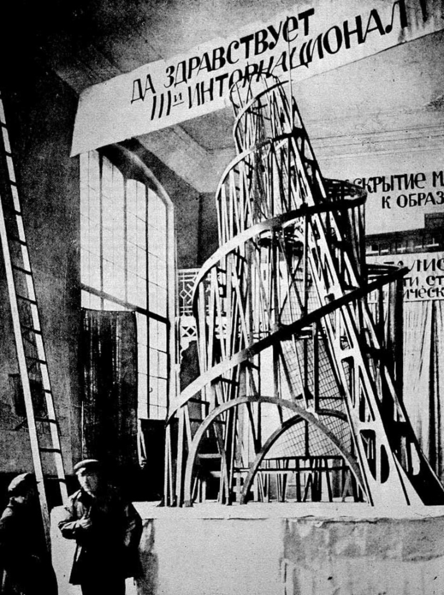

🔒 Archival Gate: Multimodal Taste Evaluation Loop
To unlock the secondary analytical infrastructure, quantitative text metrics, and 3D spatial models of this project, you must complete a 4-stage programmatic curation track. Select the style variant that aligns closest with your immediate design preferences. Previous choices will lock in place as you descend into the deep archive.
II. Unveiling the Curation: Blended Historical Specimen Expositions
Now that your blind evaluation is locked, we reveal the actual historical specimens you navigated. During the Third Reich, art was never neutral; it was weaponized into a binary system. The regime systematically elevated classical symmetry to project state authority while aggressively liquidating avant-garde modernism under the label of "Degeneracy."


Adolf Ziegler
Reich Chamber President
Painted by Adolf Ziegler, the president of the Reich Chamber for Visual Arts and Hitler's favorite painter. This triptych depicts idealized, mathematically flawless, and sterile figures representing Earth, Water, Fire, and Air. Because of its meticulous, hyper-ordered compliance with traditional academic styles, the Nazi regime hung this masterpiece prominently in the Fuhrer's building in Munich, using it to define the strict biological and aesthetic canon of the state.
Created by Ernst Ludwig Kirchner, a pioneer of German Expressionism. This work features jagged lines, clashing colors, and psychologically distorted figures exposing the anxiety and alienation of modern metropolitan life. Branded by the Gestapo as a "pathological distortion of the German spirit," Kirchner's entire life's work was confiscated, and over 600 of his paintings were removed from museums. Devastated by this systematic public liquidation and trauma, Kirchner eventually committed suicide in 1938.


Paul Troost
Hitler's Chief Architect
Designed by Paul Ludwig Troost, Hitler's first chief architect before Albert Speer. This massive marble museum features an endless row of rigid, repetitive, and heavy columns imitating a Greek temple. Stripped of modern ornamentation, its geometric symmetry was explicitly engineered to radiate eternal authority, permanence, and political weight. It served as the official sanctuary built to host the annual "Great German Art Exhibition" celebrating regime-approved propaganda.
Designed by Walter Gropius, the founder of the legendary Bauhaus school. This architecture introduced a revolutionary modern vision utilizing open steel frames, asymmetrical layouts, and radical transparent glass curtain walls to celebrate functional efficiency and international collaboration. The Nazi regime aggressively condemned this philosophy as "Jewish-Bolshevik decadence" and forced the school to permanently shut down in 1933, hunting down avant-garde architects who resisted state geometry.


Painted by Werner Peiner, a prominent state-favored artist who operated an official academy under the patronage of Hermann Göring. This landscape meticulously renders an expansive, static, and peaceful rural valley. By portraying the countryside with absolute precision and no emotional friction, it served as a perfect visual anchor for the regime's "Blood and Soil" (Blut und Boden) ideology, promoting an artificial, agrarian fantasy of regional purity and unyielding geographic dominance.
Created by Pablo Picasso, a foundational pioneer of Cubism. This masterpiece deconstructs a village landscape into fragmented cubes, geometric shards, and multiple overlapping perspectives, rejecting traditional rules of realistic depth. Totalitarian curators aggressively attacked this avant-garde perspective as a "destructive, chaotic threat to national stability," systematically banning Cubist, Dadaist, and Fauvist styles from public display to prevent individual cognitive freedom.


Wilhelm Kreis
Reich Monument Architect
Built to commemorate historical fallen soldiers and heavily re-conceptualized under Wilhelm Kreis, a dominant state architect during the Reich. The interior relies on colossal stone blocks, absolute geometric alignment, and severe architectural massiveness. Stripped of light decorative elements, this heavy, monolithic style was weaponized by the state to foster an atmosphere of collective mourning, absolute obedience, and solemn self-sacrifice for the eternal authority of the Reich.
Conceived by Vladimir Tatlin, a leading figure of Avant-Garde Constructivism. This industrial design envisioned a giant, spiraling, kinetic iron tower housing rotating glass chambers. It celebrated dynamic technological progress, transparency, and a constantly moving future. The totalitarian regime condemned this structural philosophy as the epitome of foreign, Bolshevistic chaos and completely outlawed kinetic abstraction in favor of static stone imperialism.
III. Computational Methodology: Deconstructing Speer’s Rhetoric
To empirically ground the visual censorship revealed above, this project conducts a quantitative computational text-mining analysis on the primary linguistic structures utilized by Reich Architect Albert Speer.
Empirical Digital Humanities Pipeline
- Primary Corpus Ingestion: Extracted Albert Speer's official 1938 programmatic propaganda defense text, "Facts and Lies" (tatsachen.htm), preserved within the German Propaganda Archive at Calvin University.
- Natural Language Preprocessing: Implemented string-tokenization and lowercase normalization via computational filters to strip out non-ideological syntax and isolate high-frequency semantic nodes.
- Ideological Clustering: Aggregated individual words into distinct thematic frequency indices. This mapping calculates how the regime intentionally substituted the discourse of state terror with neutral, sterile vocabularies of stability, structural "truth," and clean geometry.
Linguistic Cluster Weight Analysis
The horizontal visualization below maps out the relative normalized weight of Speer's key semantic clusters. Notice the massive statistical reliance on abstract words like "Truth" and "Structure" to mask systemized purges.
IV. Spatial Manifestation: Welthauptstadt Germania
The absolute spatial culmination of Speer’s text parameters and the regime's strict visual purification was targeted to crystalize into the concrete geography of Welthauptstadt Germania. The interactive 3D model of the Volkshalle below demonstrates how totalitarianism forced abstract philosophies into a permanent physical topography designed to crush individual identity.
Architectural Scale and Ideology
Left (Volkshalle): Designed by Albert Speer for Nazi Germania, intended to symbolize the absolute authority of the Reich through colossal scale.
Center (Eiffel Tower): Included as a standard of scale to illustrate the extreme, megalomaniacal proportions of the flanking structures.
Right (Palace of the Soviets): A Stalinist project designed to surpass all others in height, featuring a monumental statue of Lenin at its summit.
*These digital artifacts, originally created for Hearts of Iron IV modding, visualize how 20th-century regimes utilized architectural scale to manifest political power.
V. Digital Epistemology: Methodological Intent & Synthesis
Project Synthesis & Critical Conclusion:
This interactive digital humanities project was systematically constructed to expose a profound historical paradox: totalitarian oppression did not operate solely through raw physical force, but was meticulously engineered through an aestheticized apparatus of cultural curation.
By navigating the Archival Gate, users empirically witness that fascism heavily suppressed the free-thinking spirit of Modernism—banning its emotional expression, transparency, and avant-garde critique—while weaponizing the majestic language of Neo-Classicism, symmetry, and monumental stonework. Through the cross-examination of quantitative text-mining (Speer's rhetoric) and interactive spatial geometry (3D Germania modeling), this installation demonstrates that the pursuit of absolute "beauty and order" can be strategically deployed as a powerful weapon for socio-cultural liquidation and systemic human exclusion.